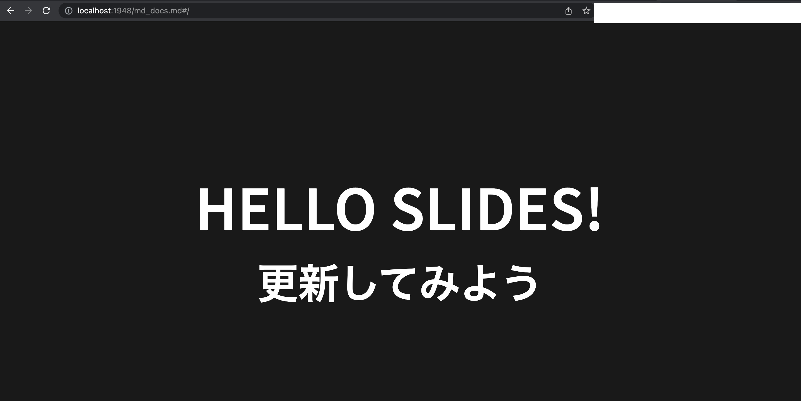
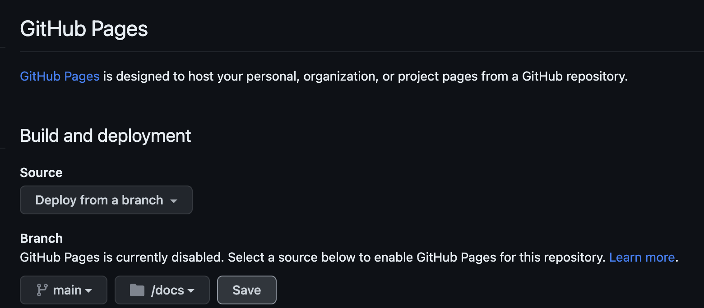
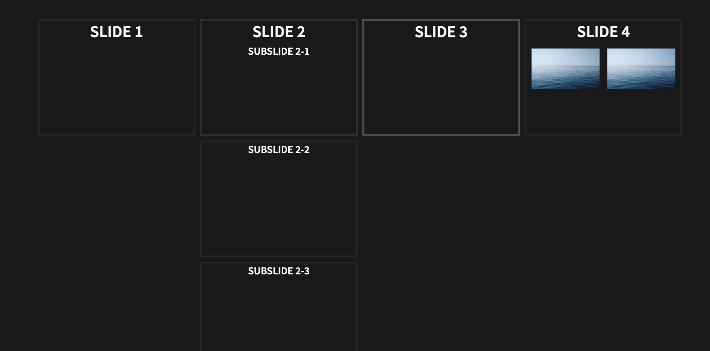

3. GitHub Pagesでスライドを公開する¶
3.1. reveal.jsをインストール¶
任意のディレクトリを作成して移動
mkdir ~~/github_pages_reveal/hello_reveal
以下を任意のディレクトリで実施
git clone https://github.com/hakimel/reveal.js.git
npmを利用するので、npmをインストールしていない場合はインストールする
brew install node
reveal.jsのpackage.jsonを利用して、依存関係をインストールする
cd reveal.js && npm i
これが完了してから、サーバーを立ち上げると、サンプルスライドがlocalhost:8080で起動している
http://localhost:8080
3.2. markdownを扱えるように変更する¶
以下を実行する
npm install -g reveal-md
新しいディレクトリで、markdownを作成する
$ mkdir ~~/github_pages_reveal/hello_reveal/md_docs
$ cd ~~/github_pages_reveal/hello_reveal/md_docs
このディレクトリに、markdownファイルを作成する。
markdownファイルが所属しているディレクトリを対象としてスライド化を実行
reveal-md md_docs -w
ブラウザが開いて、ファイルを選択するとSlidesの状況が確認できる。

また、このホットリロードなので、mdファイルを編集して保存するとブラウザ側にも反映される
上記の資材をHTMLの静的ファイルに出力する。これはGit HubPagesで公開するため利用する。
reveal-md md_docs --static docs
最終的なフォルダ構成は以下
hello_reveal
├── docs
│ ├── css
│ ├── dist
│ ├── favicon.ico
│ ├── index.html
│ ├── md_docs.html
│ └── plugin
├── md_docs
│ └── md_docs.md
└── reveal.js
├── LICENSE
├── README.md
├── css
├── demo.html
├── dist
├── examples
├── gulpfile.js
├── index.html
├── js
├── node_modules
├── package-lock.json
├── package.json
├── plugin
└── test
3.3. githubPagesでの公開¶
まずはリポジトリを作成
今回はhello_revealというリポジトリを作成
ローカルのリポジトリで、gitの設定を行う
cd ~~/hello_reveal
git init
git add .
git commit -m "first commit"
git branch -M main
git remote add origin https://github.com/MisakiFujishiro/hello_reveal.git
git push -u origin main
次に、githubで設定を行う。
Settings > Pages > Deploy from a brach

以下のエラーが出た場合は
Fetching submodules
/usr/bin/git submodule sync --recursive
/usr/bin/git -c protocol.version=2 submodule update --init --force --depth=1 --recursive
Error: fatal: No url found for submodule path 'reveal.js' in .gitmodules
Error: The process '/usr/bin/git' failed with exit code 128
以下の内容を.gitmodulesという名前にして、ルートディレクトリに保存してpushする
[submodule "reveal.js"]
path = reveal.js
url = https://github.com/hakimel/reveal.js.git
3.4. reveal-mdの基本記述方法¶
3.4.1. ページ構成¶
水平方向にスライドを作成するには、---（ダッシュを3つ）を使用します。
垂直方向にスライドを作成するには、----（ダッシュを4つ）を使用します。
# Slide 1
---
# Slide 2
## Subslide 2-1
----
## Subslide 2-2
----
## Subslide 2-3
---
# Slide 3
---
# Slide 4

3.4.2. 図の挿入¶
図を挿入する場合は、md_docsの中にファイルを置いて、参照する。
フォルダ構成は以下
md_docs
├── img
│ └── sea.png
└── md_docs.md
図を並べた時のmdファイルは以下
<div style="display: flex; justify-content: space-around;">
<img src="img/sea.png" style="width: 45%;">
<img src="img/sea.png" style="width: 45%;">
</div>

3.4.3. リンク¶
markdown形式で記述すればリンクになる
[Linkreference](https://www.yahoo.co.jp/)
ただし、HTMLのタグの内部の場合はHTMLタグを利用する。以下は、左寄せで小さい文字でリンクを記述する場合
<div style="text-align: left;">
<small>
References: References: <a href="https://www.yahoo.co.jp/">Link to reference</a>
</small>
</div>